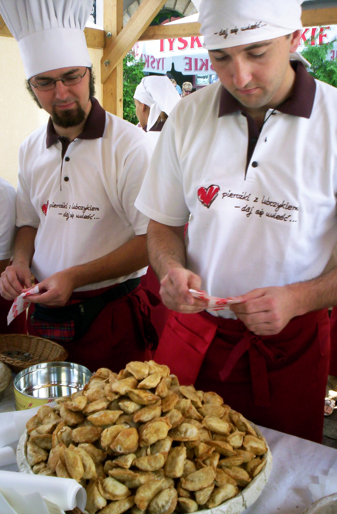

Pierogi

Pierogi are filled dumplings made by wrapping unleavened dough around a savoury or sweet
filling and cooking in boiling water. They are often pan-fried before serving.
Pierogi or their varieties are associated with the cuisines of Central, Eastern and Southeastern Europe,
though they most likely originated in China and came to Europe via trade in the Middle Ages. The widely-used
English name pierogi was derived from Polish. In some parts of Eastern Europe they are known as varenyky.
Pierogi are also popular in modern-day American and Canadian cuisine, where they are sometimes known under
different local names.
Ingredients
- Flour
- Hot water
- Eggs
- Mashed potato
- Curd
- Salt
Steps
- The dough, which is made by mixing flour and warm water, sometimes with an egg, is rolled flat and then cut
into squares with a knife or circles using a cup or drinking glass.
- The dough can be made with some mashed potato, creating a smoother texture.
- The filling is placed in the middle and the dough folded over to form a half circle or rectangle or triangle
if the dough is cut squarely.
- The seams are pressed together to seal the pierogi so that the filling will remain inside when it is cooked.
- The pierogi are simmered until they float, drained, and then sometimes fried or baked in butter before
serving or fried as leftovers.
- They can be served with melted butter or sour cream, or garnished with small pieces of fried bacon, onions,
and mushrooms. Dessert varieties may be topped with apple sauce, jam, or varenye.
To the main page
To the top